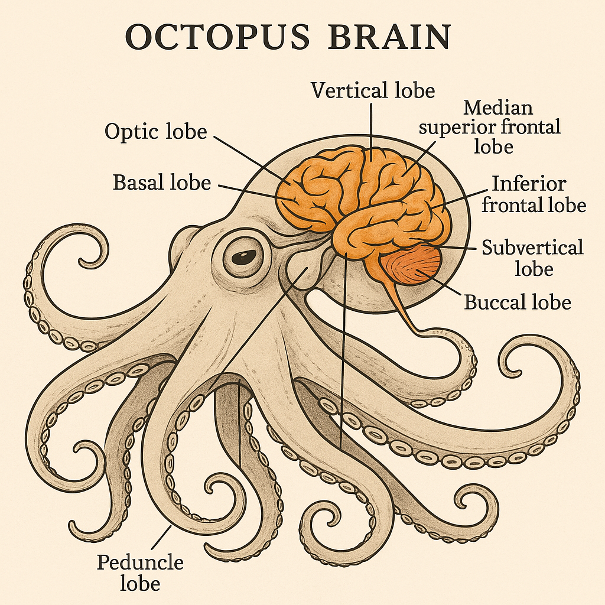

Meet Ollie! Our 8-armed spelling buddy who loves words as much as hiding in coconut shells! 🥥
Our Story
Created by a teacher who believes students learn best when they can:
- 🖍️ Touch (matching words to pictures)
- ✏️ Create (writing silly stories)
- 🎯 Practice (repetition without boredom)
Science Behind the Fun
Studies show multisensory learning activates more neural pathways than rote memorization. Like octopuses using their arms to explore, we engage:
- 👀 Visual (colors, images)
- ✍️ Kinesthetic (drag-and-drop, writing)
- 👂 Auditory (word sounds, feedback)
Why Octopuses?
Octopuses have 9 brains - 1 central brain + 1 in each arm! Our activities work the same way:
"My ADHD students focus 2x longer with OctopusBrains than worksheets!" — Ms. K., 3rd Grade Teacher
About the Creator

Cat Batchelor
M.Ed. Special Education | EdTech Enthusiast | Multilingual Learner
Octopus-level multitasker passionate about multisensory learning and dedicated to creating engaging learning experiences for all brains. My superpowers include:
• Designing adaptive tools to reach every learner
• Native English speaker with survivalist Thai + tourist French
• Spending way too much money on language apps (worth it!)
• Accidentally learning...colorful...vocabulary from students worldwide
Because when it comes to learning, one size fits none - and that's beautiful.
Love OctopusBrains? Help me keep it free and ad-free!